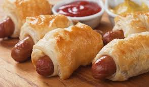
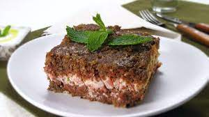

Pastel de Queijo
Delicioso pastel recheado com queijo derretido, crocante por fora e macio por dentro.

Enroladinho de Salsicha
Uma opção clássica de salgado, com uma salsicha envolvida em uma massa macia e crocante.

Coxinha de Frango
Uma delícia brasileira, com massa de batata recheada com frango desfiado e temperado.
Empada de Palmito
Uma empada deliciosa, com recheio de palmito cremoso, envolto em uma massa leve e crocante.

Quibe Assado
Uma versão assada do tradicional quibe, preparado com carne moída temperada e especiarias.